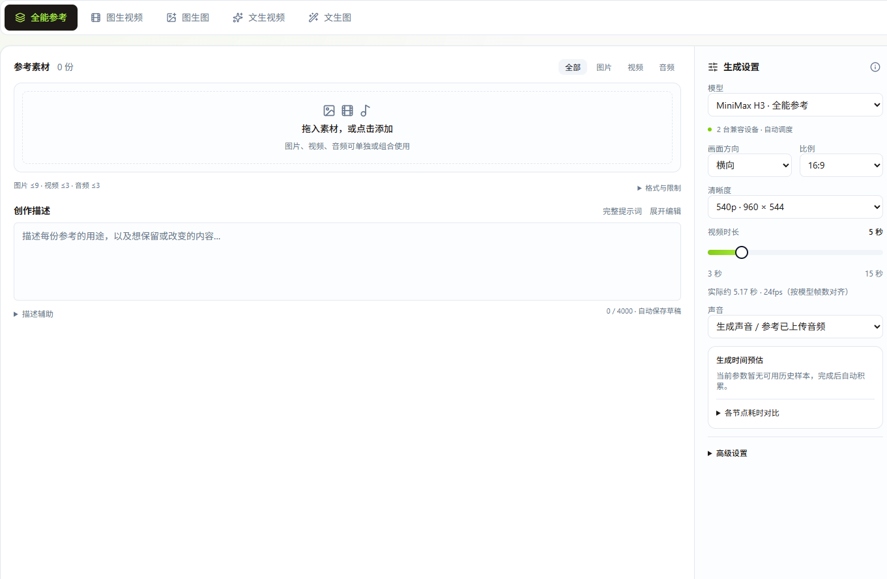
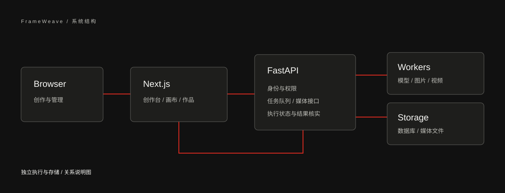
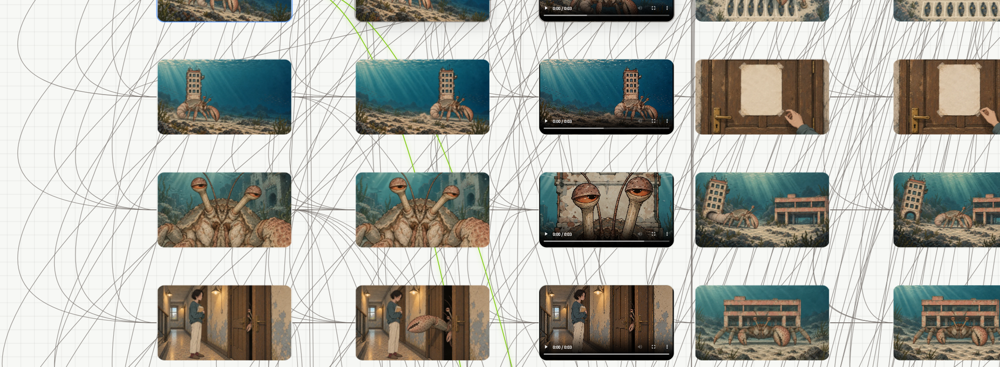

平面设计：保留角色，更换场景
先从文字探索构图，或上传已有草图做变体。角色迁移预设把两张参考图分工：第一张提供角色外观，第二张提供姿态与场景。设计师可以沿用角色，单独替换场景，再把选中的版本留作后续参考。
AI 产品经理作品集 / 核心案例
为平面设计师和动画制作人员搭建的图像与视频工作站。
创作台负责试图、改图和试镜头；无限画布把角色、场景、分镜、声音与成片组织在一起。两者共用任务队列与作品库，一张定稿的人设图可以直接成为下一个镜头的参考。

映序创作台 / 运行截图 查看界面平面设计关心一张图怎样改到可用；动画制作还要解决几十个镜头之间如何保持一致。映序用工作台处理单次生成，用画布保留不同任务之间的关系。
先从文字探索构图，或上传已有草图做变体。角色迁移预设把两张参考图分工：第一张提供角色外观，第二张提供姿态与场景。设计师可以沿用角色，单独替换场景，再把选中的版本留作后续参考。
把角色设定连接到不同分镜，为每镜准备首帧和尾帧，再生成两帧之间的运动。镜头、对白、配乐与合成版本放在同一张画布上，回看某一镜时能找到它使用的素材。
产品决策 / 映序
做这套产品时，我把“选什么画面”和“用哪台机器执行”当作两个问题。前者需要创作者判断，后者应尽量由平台承担。
设计师手里有一张角色图时，首先要决定的是修改静帧，还是让角色动起来。创作台因此按输入与目标组织五个入口，再在入口内选择适用预设。模型细节仍可查看，高级采样参数留给需要控制结果的人。
同样上传两张图，平面设计可能是“人物取自图一，姿态取自图二”，动画制作可能是“从图一运动到图二”。如果只提供通用上传框，系统无法表达这层差别。角色迁移、普通参考与首尾帧因此分别说明每张图的作用，提交前按模式校验数量。
动作方向还没确定时，可以用加速预设试镜；需要对照参考图细调时，可切到标准采样。平台保留两条路径，并展示步数、实际输出尺寸和帧数对齐后的时长。这里的选择是让人判断这个镜头值得花多少计算资源，不能把更多采样步数等同于一定更好的画面。
生成任务提交后，即使页面失去连接，后台也可能仍在计算。把不确定结果单列为“等待核对”，让用户区分确实失败与尚未回收；自动重试虽然少一次操作，却可能重复消耗 GPU 时间或订阅额度。
创作者在工作台或画布提交描述和参考素材。平台把它登记为任务，按所选预设交给兼容的 GPU 工作节点，或送入已配置的在线生图通道。结果回到作品库，画布可以继续引用它，作为下一镜的参考。

按工作台的输入和输出来分，图片有两种入口、五个预设；视频有三种入口、九个预设。预设是模型、输入约束和采样设置的组合，同一模型的快速版和标准版分别计数。账号权限、订阅配置和设备能力决定实际可用项。
从一句描述开始试构图。SDXL 在 GPU 工作节点上运行，按选定尺寸生成；新增的在线订阅生图把同一种任务交给独立执行器。在线通道把尺寸作为请求条件，入库后再显示实际尺寸，不能像本地采样一样固定种子。
SDXL 单图再创作以变化幅度控制保留多少原图结构。Qwen Image Edit 把角色迁移单列为双图流程，也可给最多三张图指定不同用途；在线订阅编辑支持一至五张参考图。这样，改一张草图和把同一角色放进新场景有了不同的输入约定。
Wan 2.2 5B 从文字生成无声镜头。H3 增加音画联合生成，并保留两种采样选择：Turbo 版用 6 步试动作，标准版默认 20 步，用较长的生成时间换取另一版结果供比较。
Wan 5B 用一张首帧驱动镜头；Wan 14B 将采样分成高、低噪声两段，并提供标准与 LightX2V 四步加速两版。H3 又提供 Turbo 与标准版。标准版进一步区分普通参考、多图参考与首尾帧：参考图约束角色和风格，首尾帧则明确镜头从哪里开始、在哪里结束。
当一张首帧不足以说明动作或声音，H3 全能参考允许图片、视频和音频组合输入，分别描述角色、镜头运动和声音。它把高分辨率和长时长任务交给符合显存条件的节点；帧数按模型要求对齐，界面显示实际预计时长。
十二个预设由 Worker 对接 ComfyUI 执行，可使用本地或接入的云 GPU。另两个图片预设经独立的订阅执行器调用在线服务。云 GPU 是工作节点的一种部署位置，不额外算一种创作模式。
图片和视频节点把生成请求交给平台，由平台追踪排队、执行与结果回收。创作者可以在工作台试单张，也可以在画布上用同一套预设串起多个镜头。
查看公开工作流定义这部短片用角色设定、首尾帧和声音节点串起制作过程。画布保留了这个项目的 241 个节点、652 条连线和原始空间布局。可以拖动、缩放、切换创作阶段，点击节点查看素材，再沿连接继续探索。
在独立窗口打开画布真实项目数据，重新设计的只读展示界面。原始画风参考仅保留节点位置，不分发参考图片；账号、内部地址、提示词配置及连接凭据不包含在公开版中。
角色、服装、场景和道具作为可复用的视觉依据，连接到后续分镜，让连续镜头共享同一套设定。
把分镜首帧、尾帧和视频结果放在一起。既能顺着叙事浏览，也能回溯每个结果依赖的素材。
旁白、对白、配乐和环境声保留各自节点，再接入合成版本；风格实验与完整成片也在同一画布中。
作品放映
循环房东实验版
英文配音 · 中英字幕
一场关于住所、房东和“拥有自己的房子”的怪诞循环。沿着画布回看，从视觉设定到声音合成，每一段创作都有迹可循。
回到制作画布《寄居蟹》是一次完整的制作走查。它说明这套工具能容纳从设定、分镜到声音和成片的过程；241 个节点和 652 条连接描述的是该项目的复杂度，不能据此推断团队采用率或制作效率提升。
在画布里搜索“S06_V”，打开“楼下竟然是蟹”。右侧能看到它连接的首帧、尾帧、角色设定与声音素材。再点首帧，可以继续追溯它引用的场景和画风。这条路径展示了为什么作品库之外还需要画布：库里能找到结果，连线保留了结果之间的依赖。
在真实案例中验证入口是否易懂：给首次使用者同一组角色图和场景图，分别要求完成角色迁移和首尾帧过渡，记录首次选对模式的比例及误选原因。
画布是否帮助复用：让创作者替换一个角色设定并找出要重做的镜头，对照仅使用作品库时的定位耗时和漏选数。
异常状态是否清楚：观察任务断线后的重复提交率，同时检查是否有人把“等待核对”误读为失败。以上是验证计划，暂无公开测试结果。
真实截图记录平台已经实现的功能；重新设计的演示界面探索信息层级与操作布局。两者分别标注，让功能事实与设计提案都清楚可见。

示例构图 · 不使用私人素材
演示交互，不调用生成服务。
重设计提案：以黑白层级、连续工作区和更清晰的参数分组，延续作品集的视觉语言。此处不是生产平台截图。
将提交、追踪、整理和编排连接起来，让一次生成成为可继续使用的创作素材。
选择预设、配置参数，提交图片或视频任务。
查看执行过程，区分运行、完成与结果待核实的任务。
按账号权限访问素材，保存生成结果与相关信息。
组织创作节点与素材，将想法延伸为后续步骤。
围绕任务执行、异常状态与部署配置，把单个功能组织为可持续迭代的系统。
前端负责交互，API 管理状态，Worker 承担计算与模型调用。按执行能力配置本地或云端资源。
网络中断不代表任务没有执行。对于结果不明确的任务，保留状态供核实，避免盲目重复生成。
以独立配置、数据库与素材存储建立平台实例。公开源代码不携带生产环境的密钥、账号或真实作品。
本页提供只读工作流浏览与作品播放，不提供在线生成服务，也不调用真实生成额度。
工作台基于 ViewComfy 扩展，保留 AGPL-3.0 许可证与上游归属。画布基于 Infinite Canvas 扩展，保留其 MIT 许可证与来源说明。
图片、视频和语音能力需要部署者自行配置模型、执行端和适用的服务账号。
回到作品目录，了解开发协作与表达工具。